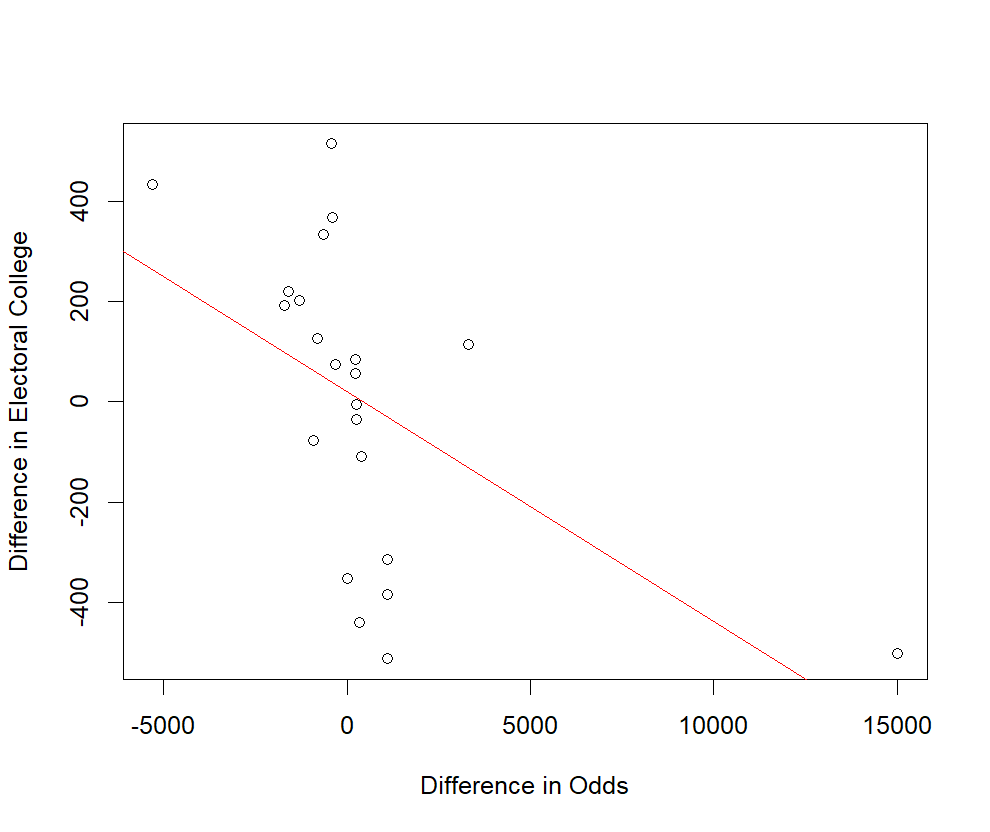
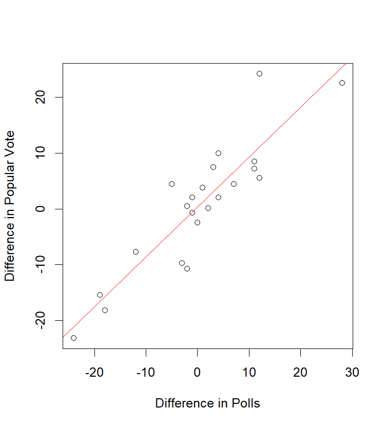
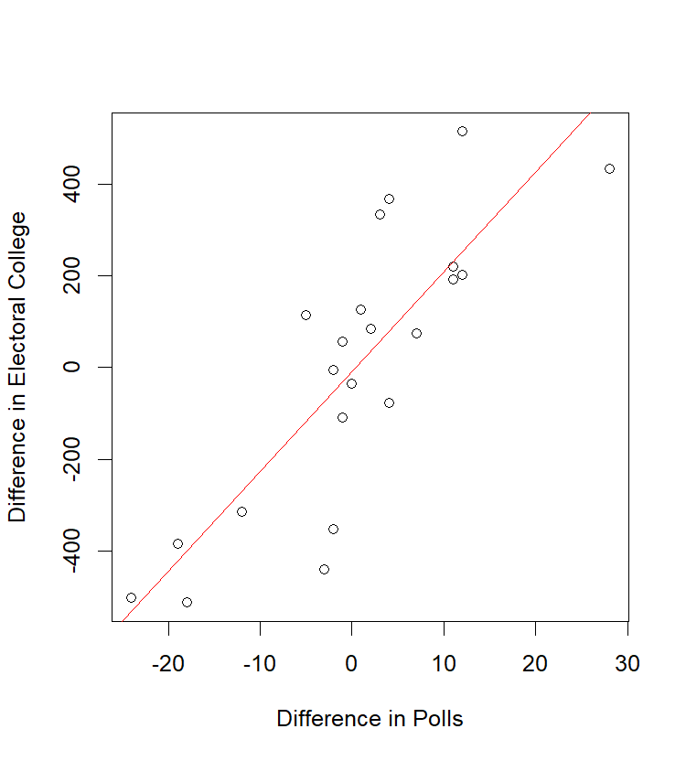

With the 2024 presidential election just around the corner, I've been hearing more and more often than odds in the betting markets are better at predicting the outcome of an election that traditional polling. When people are putting their own money on the line, so the thinking goes, they are more likely to be honest about who they think will win the election as opposed to who they want to win the election.
I've always been somewhat skeptical of this claim. In and of itself, I can't imagine how bettors en masse would have insight into the nationwide state of the election other than to look at publicly available poll data. That is, if they even care about that, as I imagine many folks who vote believe their candidate is the best one for the job and think they are likely to win the election. If this is true, then the betting election odds should just be some amalgamation of the publicly available polling data and the popular vote.
Naturally, I did what any sane person would do and collected information on the polling data, betting odds, and outcomes of the last 22 presidential elections, going back to the election of FDR in 1936.
| Election | Winner | Election Odds | Polling | Popular Vote | EC Votes | |
|---|---|---|---|---|---|---|
| 1936 | Dem | -250 | +180 | +12% | +24.26% | 532 |
| 1940 | Dem | -200 | +200 | +4% | +9.95% | 449 |
| 1944 | Dem | -340 | +300 | +3% | +7.50% | 432 |
| 1948 | Dem | +1500 | -1800 | +5% | +4.48% | 303 |
| 1952 | Rep | -120 | -120 | +2% | +10.76% | 442 |
| 1956 | Rep | +500 | -600 | +19% | +15.40% | 457 |
| 1960 | Dem | +110 | -130 | +2% | +0.17% | 303 |
| 1964 | Dem | -3300 | +2000 | +28% | +22.58% | 486 |
| 1968 | Rep | +180 | -220 | +1% | +0.7% | 301 |
| 1972 | Rep | +5000 | -10000 | +24% | +23.15% | 520 |
| 1976 | Dem | +100 | -120 | +1% | +2.07% | 297 |
| 1972 | Rep | +160 | -180 | +3% | +9.74% | 489 |
| 1984 | Rep | +400 | -700 | +18% | +18.21% | 525 |
| 1988 | Rep | +400 | -700 | +12% | +7.72% | 426 |
| 1992 | Dem | -800 | +500 | +12% | +5.56% | 370 |
| 1996 | Dem | -1000 | +600 | +11% | +8.51% | 379 |
| 2000 | Rep | +110 | -150 | +2% | +0.51% | 271 |
| 2004 | Rep | +120 | -140 | +1% | +2.47% | 286 |
| 2008 | Dem | -900 | +800 | +11% | +7.26% | 365 |
| 2012 | Dem | -450 | +360 | +1% | +3.86% | 332 |
| 2016 | Rep | -550 | +375 | +4% | +2.09% | 304 |
| 2020 | Dem | -175 | +150 | +7% | +4.45% | 306 |
If we sit down and tally up the results, we hit our first bump in the road. National polling only incorrectly predicted the winner of the election 3 of the last 22 elections. By contrast, the election odds incorrectly predicted the winner of the election 4 times, and failed to predict any winner at all an additional time bringing us up to 5 times the betting odds failed to predict the election outcome.
To make matters worse, it's not even like the odds sometimes predicted a winner that the polls didn't. The election odds only disagreed with the polling data twice of the last 22 elections, and in both cases, the polling data was correct and the betting odds were wrong.
Putting this together, the case is not looking great for the idea that betting odds hold any secret wisdom. As I suggested at the top of the article, it seems like the betting odds are for the most part a worse version of publicly available polling data. Actually, not just worse, but strictly worse.
I have seen at least one claim floating around that the polls might hold some value for predicting the amount by which the victor wins in the electoral college. That is, that when the spread in betting odds is larger than the difference in the number of electoral college votes is larger. They had pointed out that there is a correlation of somewhere between -0.4 and -0.5 between the odds spread and the margin of victory.
As a refresher, the correlation is a measure of how much two variables change in lockstep, with values of -1 and 1 being perfect correlation and a value of 0 meaning no correlation. A correlation of -0.4 to -0.5 would definitely be of interest as that is quite a strong result. Indeed, upon doing this myself I get a correlation of about -0.54, even stronger than claimed.
But this narrative begins to fall apart again when we start comparing against polling data instead. The correlation between the polling data spread and the margin if victory in both the popular vote and in the electoral college is much stronger, sitting at 0.90 and 0.83 respectively.
In fact, comparing against the other variables I've collected, the betting odds have the strongest correlation with - you guessed it - the polling data! The correlation between these data is 0.74, compared to 0.64 for popular vote vs odds and the aforementioned 0.54 for the electoral college vs odds.
Unfortunately, there doesn't seem to be any realistic case to be made that the involvement of real money makes betting market odds any better at predicting elections than good old-fashioned polling data. In fact, if anything, there is a case to be made that it makes the prediction worse.
This may be especially important to keep in mind in the coming election. With prominent figures like Elon Musk using their influence to flood money into the betting markets in a partisan manner, it can give the appearance that something is there that isn't.
As tempting as it is to believe that there is some secret information that will help us predict the outcome, this is sadly not borne out by the data.